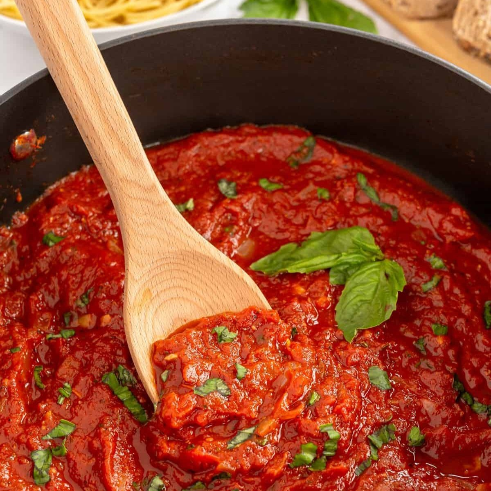
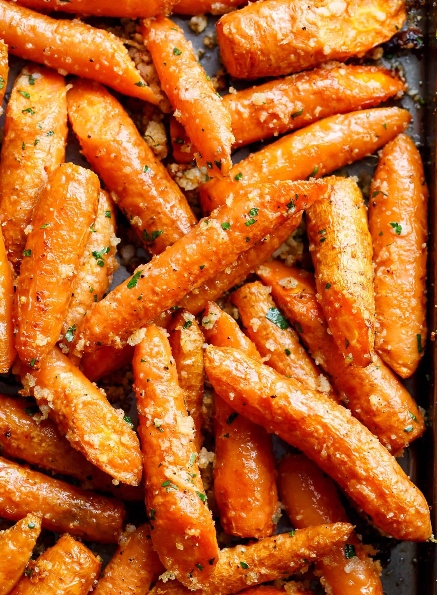
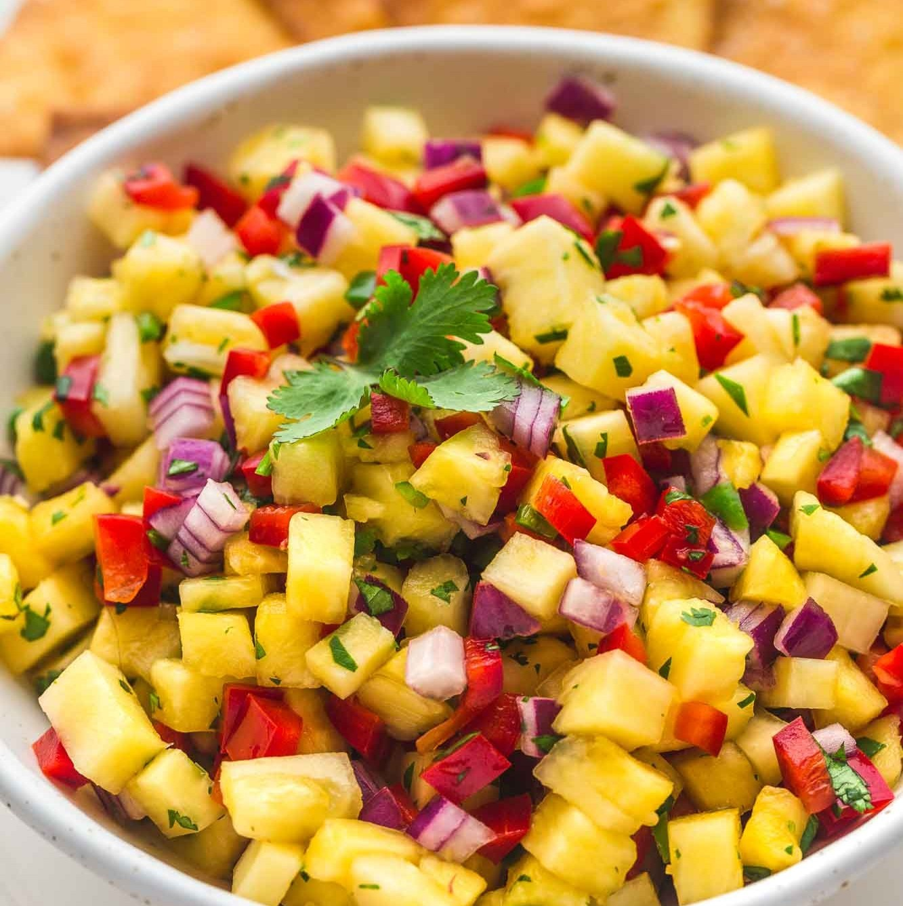
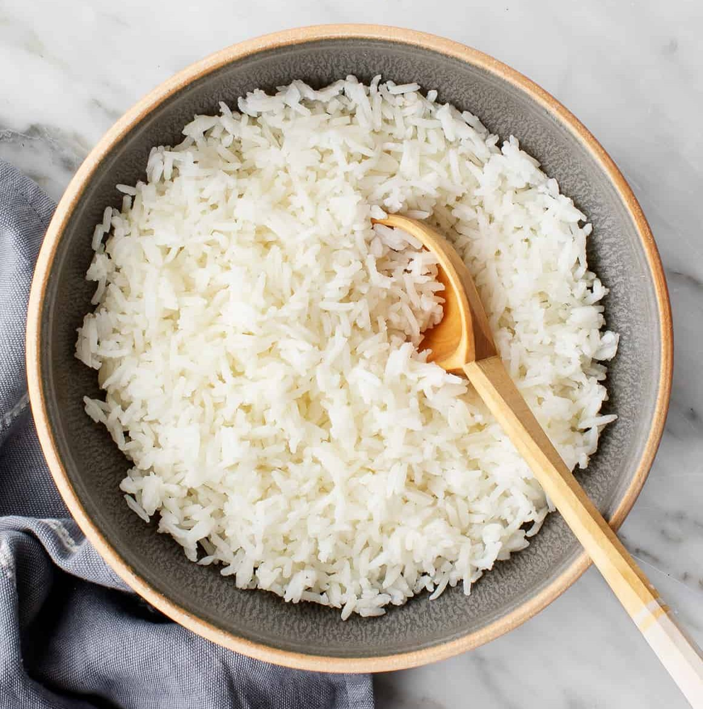

Mom’s Homemade Tomato Sauce

- Get 2 cans of whole peeled tomatoes (tuttarosa or rienzi)
- Optional: Put peeled tomatoes in blender and purée for 10 seconds (1 can at a time)
- Cover the base of the pot in a layer of olive oil
- Add 3 cloves of garlic per can of tomatoes
- Add tomatoes (turn of heat and use splash guard/pot lid)
- Add basil, 2-3 red peppers and 1.5 tablespoon of salt
- Cover with splash guard, set a timer for 12 minutes and cook on medium high heat
- Drop to medium heat for 12-15 minutes
- Serve over your favorite pasta noodle
Kale chips

- Get a bag of chopped kale or chop your own
- Cover sheet pan in tin foil or parchment paper and place kale chips on it
- Drizzle olive oil, salt and pepper onto kale
- Optional: sprinkle red pepper flakes
- Bake at 350*F for ~15 minutes or until at the desired crispiness level
Crispy Seasoned Potatoes

- Chop red potatoes (or other potato of choice) into small cubes
- Place potatoes on a tin foil or parchment paper covered pan and drizzle with olive oil
- Season with salt and pepper then add based on preference
- Seasoning options
- Montreal Steak Seasoning
- Garlic powder and rosemary
- Italian seasoning
- Toss potatoes to distribute the seasoning evenly
- Bake at 400*F for ~25 minutes or until potatoes are cooked through and crispy
Oven Baked Carrots

- Place baby carrots on a tin foil or parchment paper lined baking sheet
- Drizzle with olive oil and season with salt, pepper and garlic powder
- Top with italian breadcrumbs
- Bake at 400* for ~15-20 minutes or until tender
Pineapple Salsa

- Cube a small container or ~2/3 cup of pineapple
- Chop 1/2 of a bell pepper, 1/4 of a red onion and 3 tbsp of cilantro
- Mix together in a bowl
- Add 2 tbsp of lime juice and a pinch of salt
- Serve with chips or in a burrito bowl
Rice

- Wash 1 cup of rice in a pot well
- Add 1.5 cups of water and a pinch of salt
- Bring rice to a boil
- Cover, lower the heat and simmer for 15 minutes
- Remove from heat and let sit still covered for 10 minutes
- Fluff rice with a fork